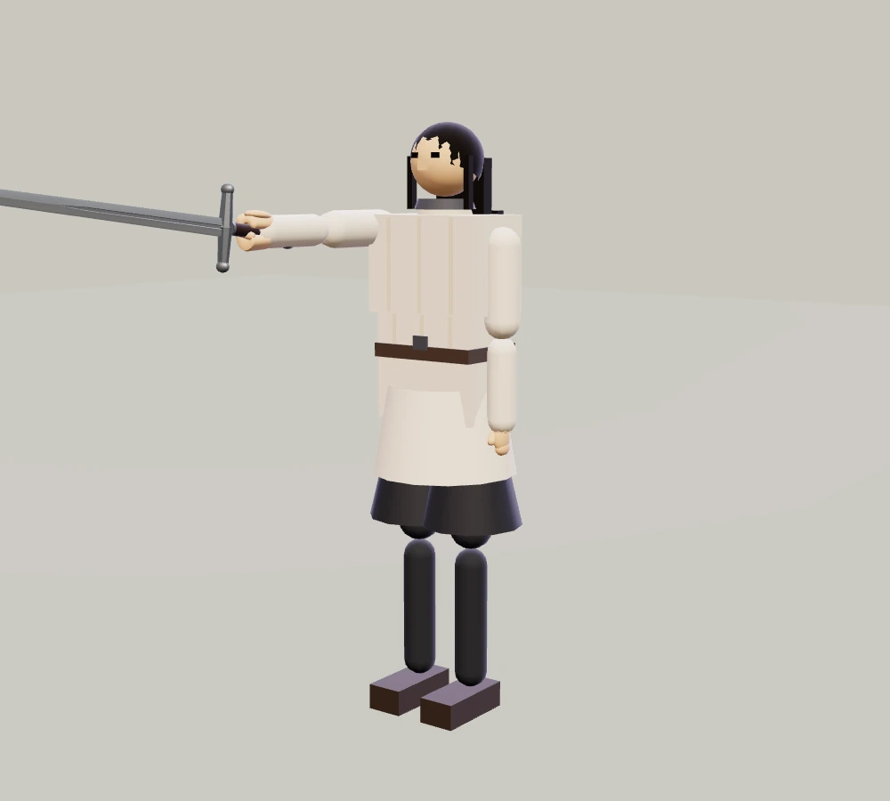
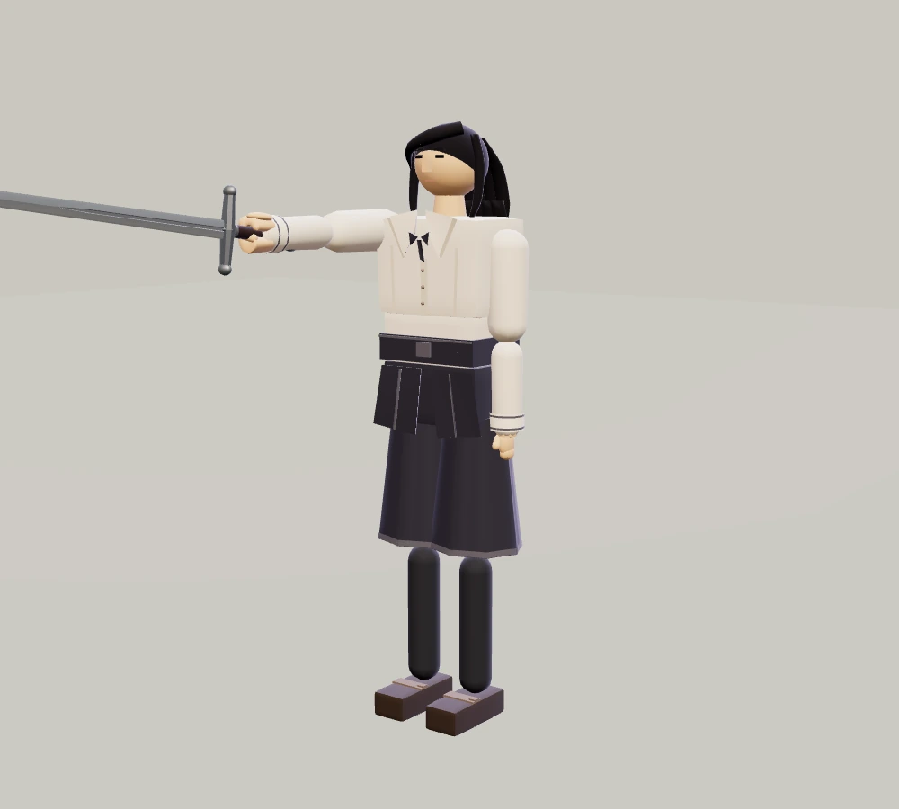
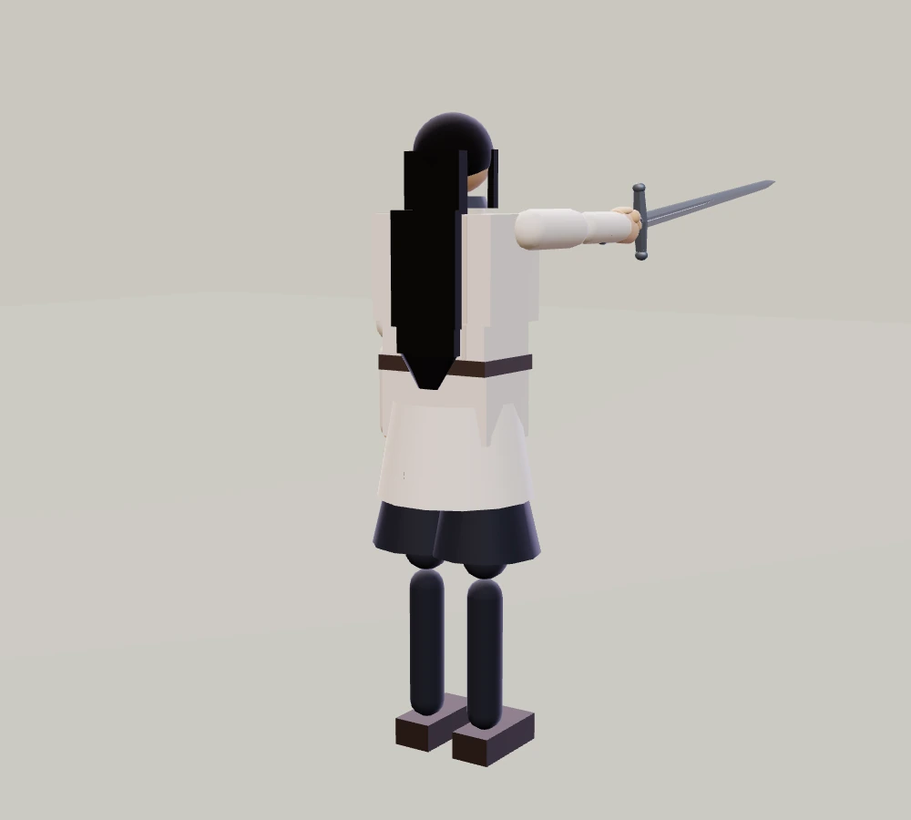
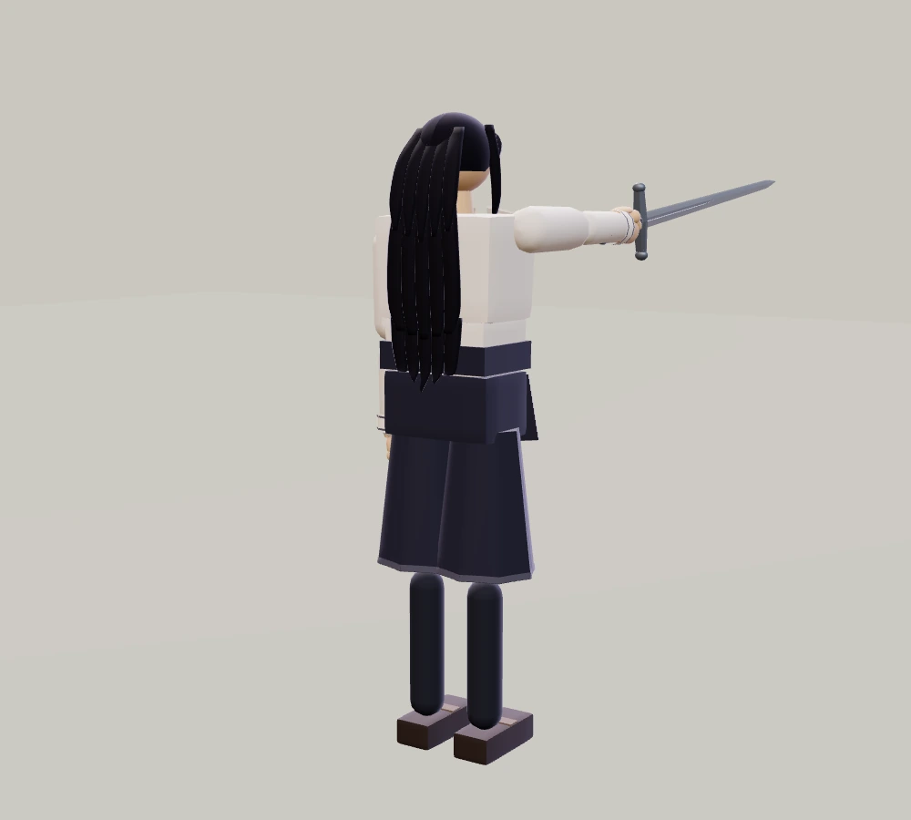
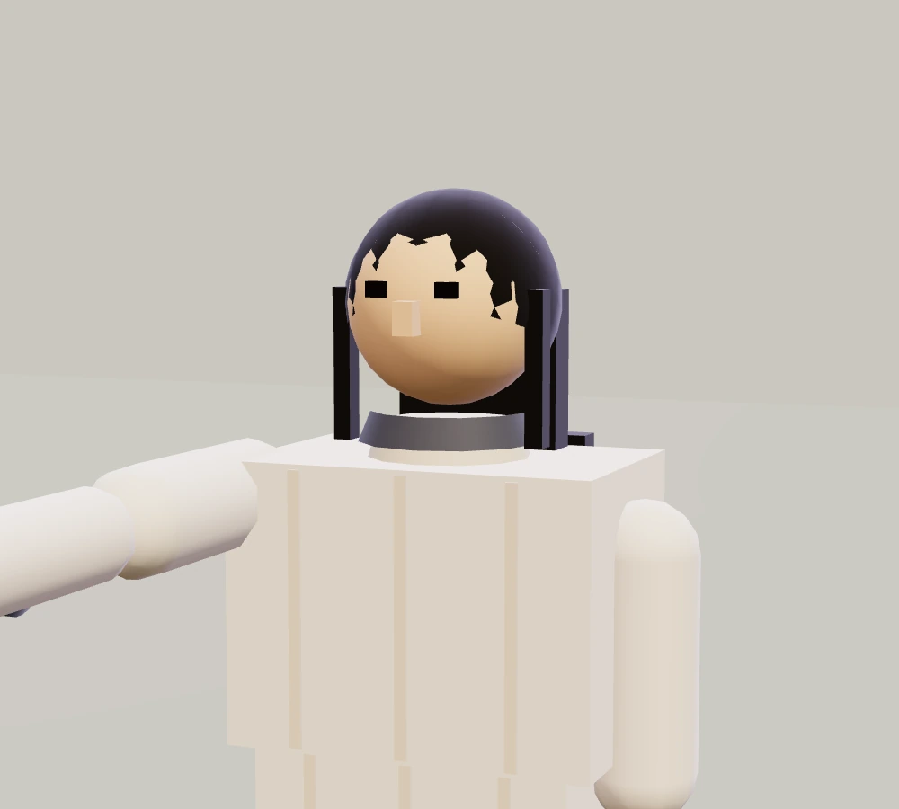
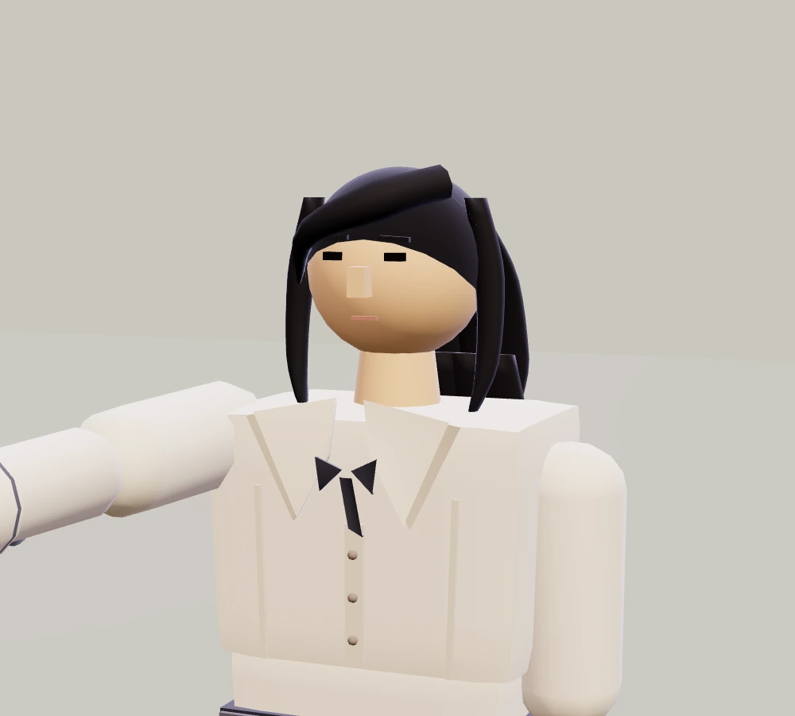

적막 · 인물의 디테일
이졸데의 옷과 머리
사용자 선택에 따라 기존 외형(v2)으로 복원했습니다. 오른쪽 v3는 미채택 검토안의 기록입니다.
같은 자세와 조명에서 촬영한 실제 게임 모델입니다. 사진을 누르면 크게 볼 수 있습니다.
외형 비교용 정적 자세이며 실제 전투 자세와는 다릅니다.
전체 인상




뒤에서 본 머리와 옷




얼굴 주변과 옷깃




달라진 부분
긴 머리를 여러 가닥의 덩어리로 나누고, 옷깃·소맷단·치마의 주름을 다듬었습니다. 작은 장식보다 실제 플레이에서 보이는 윤곽을 먼저 정리했습니다.
키와 팔다리 길이, 무게와 전투 물리는 같습니다. 아래에서 같은 대성당 무대의 현재 외형과 미채택 검토안을 비교할 수 있습니다.
무기 카드 하나를 선택하면 결투가 시작됩니다. 휴대폰은 가로 화면을 권합니다.